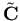

Siguiente: Mejoras en la iluminación Subir: Método propuesto Anterior: Diseño del método Índice General
Para el cálculo del valor de gris se usa la fórmula perceptualmente ponderada definida en la ecuación (3.1) donde , y  representan los canales rojo, verde y azul de la imagen de entrada respectivamente, e
representan los canales rojo, verde y azul de la imagen de entrada respectivamente, e  representa la imagen resultado convertida a tonos de grises:
representa la imagen resultado convertida a tonos de grises: